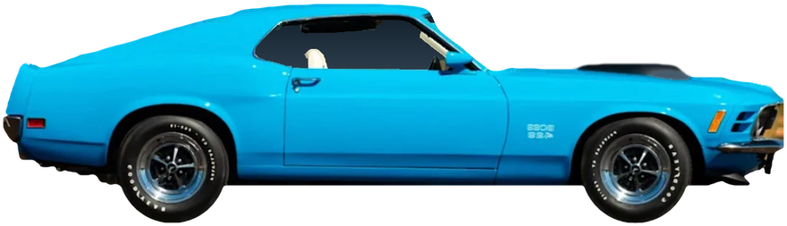

Follows your real speed
GPS speed in, revs out. Floor it and the engine revs harder and shifts later. Lift off and it crackles on the overrun.
Your Tesla is fast.
Brilliant.
And completely silent.
Until now.
TeslaSound · engine sound for EVs
TeslaSound plays a live engine through your car's speakers, and it follows your real speed. It burbles at idle, revs when you floor it, shifts gears and crackles when you lift off. Open it in the Tesla browser and go. Nothing to install.

Scroll to drive · V8 Muscle
A lumpy crossplane burble at 760 rpm. Stopped at a light? Hold REV and it barks.
First gear. The revs climb, the pipes open up and the intake roars.
A real gearbox with real ratios. The revs drop and the pull goes on.
Third, fourth, all the way up. Every rev follows the speed, the way a real engine would.
Pops and crackle on the overrun. Scroll back up and do it again.
In the car the same engine follows your real speed. Nothing you just heard was a recording.
Hear the real synthesizer, revved by your scroll.
Not a loop
Most fake engine noise loops a recording, so it never really matches the car. TeslaSound builds the sound in real time from your speed. It models the firing order, every exhaust pulse, the pipes, the intake roar and the gearbox, so what you hear is what a real engine would do at that speed.
How it sounds real
Each cylinder fires in the real engine's order. That uneven beat is why a crossplane V8 lopes and a V12 howls.
Every firing is its own pulse of sound, never quite the same twice, like real metal and real combustion.
Pipe lengths, echoes and the muffler shape the tone, from a muffled stock car to open pipes.
The intake roars under load. Where the car has a supercharger, you hear it whine as the revs climb.
Real ratios and shift points. Quick upshifts, rev-matched downshifts, and a clutch in the manual cars.
Mixed live in the browser and played through the car's speakers, like music. No files, no loops.
What you get
GPS speed in, revs out. Floor it and the engine revs harder and shifts later. Lift off and it crackles on the overrun.
Automatics, dual-clutch and a proper manual with a clutch. It blips and rev-matches on the way down when you brake.
Intensity sets how eagerly it revs and how late it shifts. Character goes from a stock, muffled engine to a lumpy cam with open pipes. Crackle adds the pops and bangs.
No car nearby? Press the Gas and Brake pedals on screen (lower presses harder, the top of Gas holds your speed) or play the demo run. Works on a phone or a laptop too.
The garage
Engines modelled on real cars, made-up ones, an electric buzz and a few you would never find at a dealer. Pick one before you drive, switch any time.
New cars land in the garage all the time, real and made-up. Got an engine you would love to hear in your EV? Tell us at lifemock@gmail.com.
Car names only describe the style of sound. Every sound is made by our own code, no recordings.
In the car
Use the Tesla browser. Bookmark it so it is one tap away next time.
The engine is driven by your GPS speed, so without location it cannot rev. Your location stays in the browser.
It plays through the car speakers, like music. Accelerate harder for more revs.
Blip the throttle while you wait for green.
Pricing
$0 every day
$3 a month + tax
GPS is only used to measure your speed, in the browser. It is never sent anywhere.
Every engine is synthesized live by our own code, so it reacts to each change in speed.
Engine sound can mask sirens and warnings. Keep the volume sensible.
Next time you are parked, type this into the car's browser.
teslasound.io